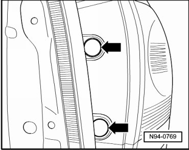
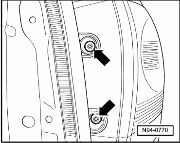
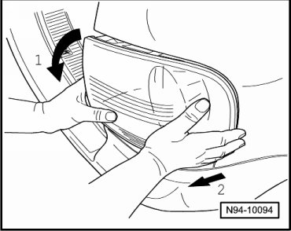
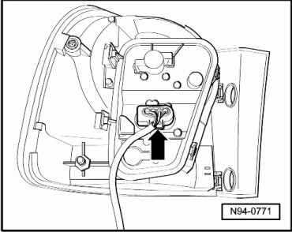
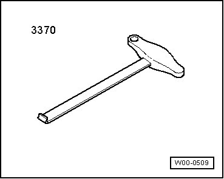
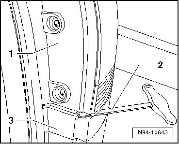
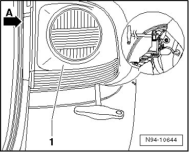
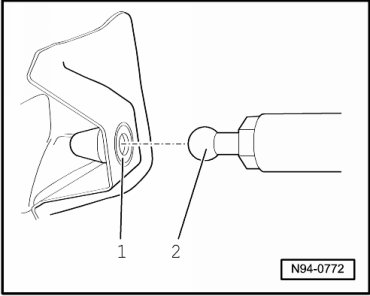

Side Panel Tail Lamps
Tail Lamps
Side Panel Tail Lamps
Removing
CAUTION!
• Do not pry out back-up lamp using a screwdriver, plastic wedge or similar tool.
• There is the danger of damaging the taillamp assembly or vehicle paint.
• If taillamp assembly cannot be disengaged by hand, the hook for front end (3370) can be used as an aid as described below.
- Switch off ignition, switch off all electrical consumers and remove ignition key.
- Unclip cover caps - arrows - of mounting bolts at tail lamp assembly.

- Remove screws - arrows -.

• Housing for tail lamp assembly is also secured to mounting bolts with a ball head in a securing clip. For deviating gap dimensions, an adjustable tail lamp assembly carrier must be installed with a plastic clip nut --> [ Adjustable Tail Lamp Assembly Carrier in Side Panel ].
CAUTION!
• Taillamp assembly may be destroyed.
• Do not tip and turn taillamp assembly too far in direction of arrow 1 in Fig. N94-10094, otherwise the taillamp lens will break.
• If taillamp assembly cannot be disengaged by hand, the hook for front end (3370) can be used as an aid.
- Rotate tail lamp assembly in - direction of arrow 1 - until housing can be seen at upper gap. Simultaneously pull tail lamp assembly by hand in - direction of arrow 2 -.

- Disengage harness connector - arrow - and disconnect it.

• If tail lamp assembly cannot be removed by hand, proceed as follows:
Special tools, testers and auxiliary items required
• Special hook (3370)

- Cover bumper cover - 3 - with standard adhesive tape below tail lamp assembly - 1 - to protect the paint.

- Guide hook for front end (3370) - 2 - into gap under taillamp assembly - 1 - as depicted in the illustration.
- Carefully slide hook for front end (3370) on to position depicted in the illustration.

• Magnified area in the illustration makes it clear at which location the hook for front end (3370) must be positioned to pull out the taillamp assembly.
- Using the hand on the T-handle of hook for front end (3370), pull taillamp assembly - 1 - toward rear.
- Support the pulling motion by also pulling and supporting with free hand in upper area of tail lamp assembly - arrow A -.
CAUTION!
• Taillamp assembly wiring harness may be damaged.
• Carefully unlock taillamp assembly and pay attention to lengths of connected wires.
- Disengage and disconnect harness connector - arrow -.
Installing
Install in reverse order of removal, noting the following:
• Plastic clip nut - 1 - must be replaced after each removal of the tail lamp assembly!
- Connect harness connector.

- Insert tail lamp assembly housing into body cut-out and push ball head - 2 - into new plastic clip nut - 1 - while doing so.
- Bring housing for tail lamp assembly into correct position to the body by hand, hold firmly and then tighten mounting bolts.
- Check gap dimension --> [ Tail Lamp Gap Dimensions ] Tail Lamp Gap Dimensions